Testing Concepts & Understanding the TUG
Exploring the client's vision, testing a cryptocurrency direction, and discovering through user testing why a different approach was needed.
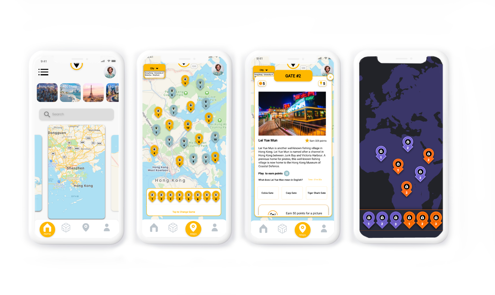
Testing Concepts & Understanding the TUG
Exploring the client's vision, testing a cryptocurrency direction, and discovering through user testing why a different approach was needed.
Creating Gamification Concepts
Using the Octalysis Framework to design a gamification system — in-game economy, badges, artifacts, and secret maps.
Prototype Creation
Building a medium-fidelity prototype around the gamification concepts, artifact system, and redesigned user flow.
The Urban Guide is an educational cultural app that enables users to explore countries by walking to real-world locations and answering cultural questions. Our team was brought in to redesign the game with gamification features that would make it more engaging and enjoyable.
The project spanned 12 weeks — though the first 4–5 weeks involved significant client negotiation, as the original brief asked for cryptocurrency and NFT integration. User testing quickly showed this direction wasn't working, and we pivoted to focus on what made the game unique: the exploration and learning experience itself.
How might we make the TUG more entertaining and engaging so that users have a fun experience and learn more about other cultures while playing?
The client initially wanted a cryptocurrency and NFT direction — a Cryptowallet, NFT Exchange, Leaderboards, and a Museum & Artifacts section. After the first round of user testing, it was clear this was not the right path. We convinced the client to redirect focus to what was core: making the game itself more playable and enjoyable.
Below: the original cryptocurrency user flow, low-fidelity sketches, and first round of user testing notes and summary.
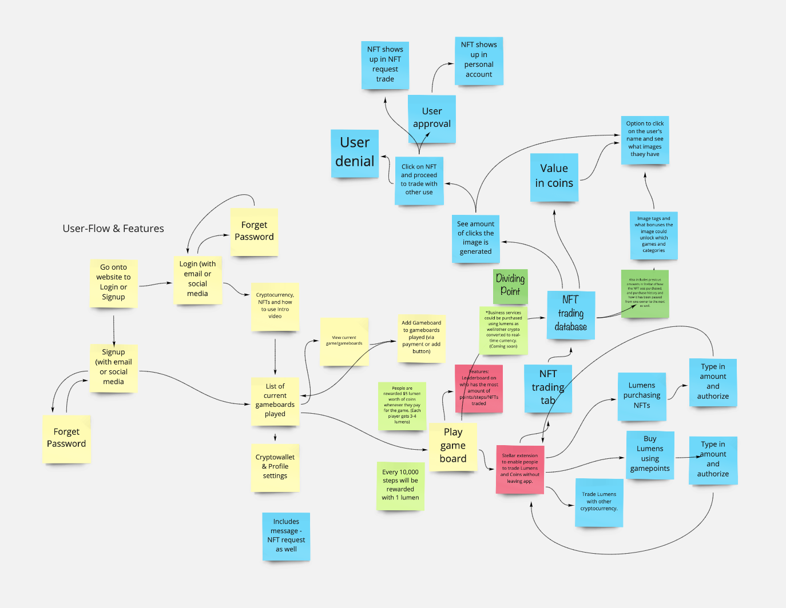
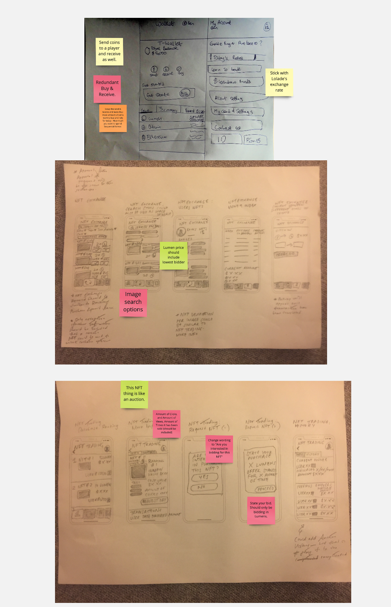
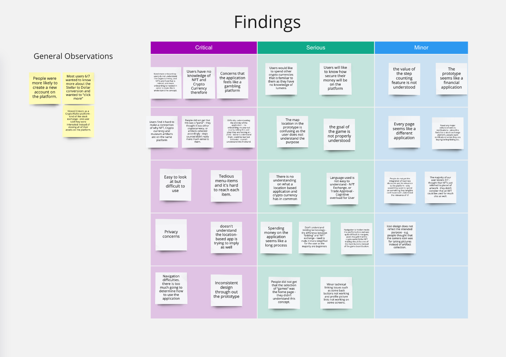
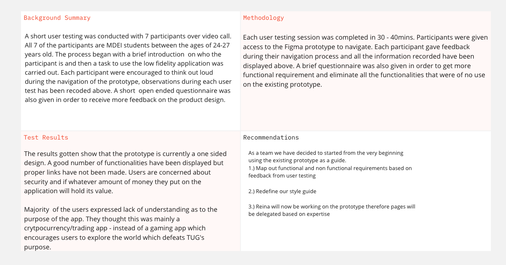
I applied Yu-Kai Chou's Octalysis Framework, which identifies 8 core drives that make games engaging. Based on this, we selected 4 focus areas for the redesign:
I also created a points system corresponding to each badge type, to give the economy structure and balance.
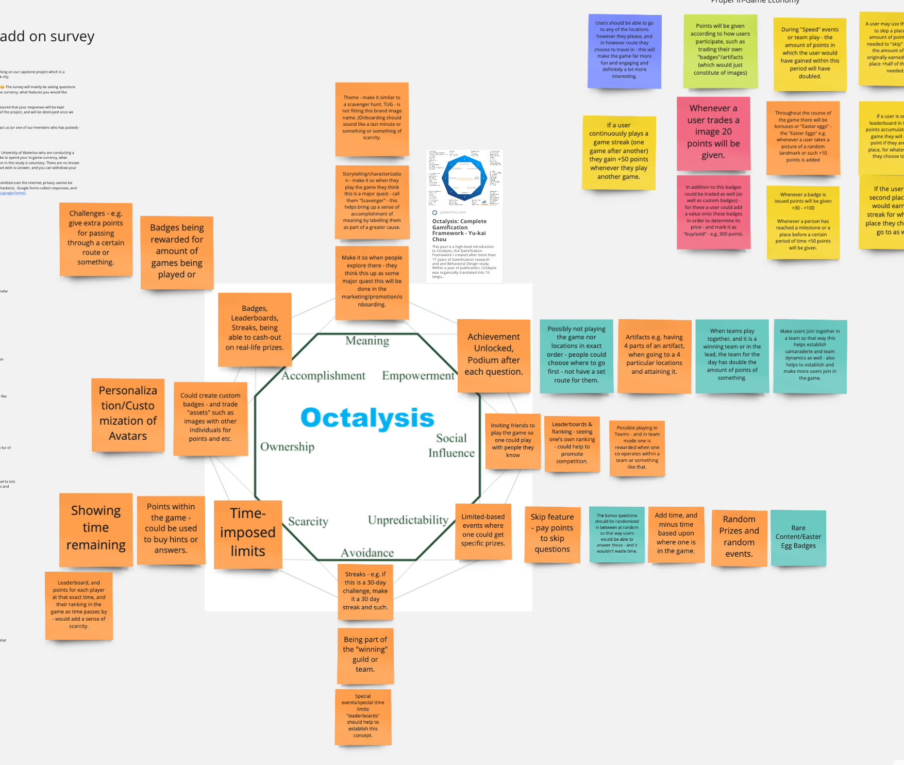
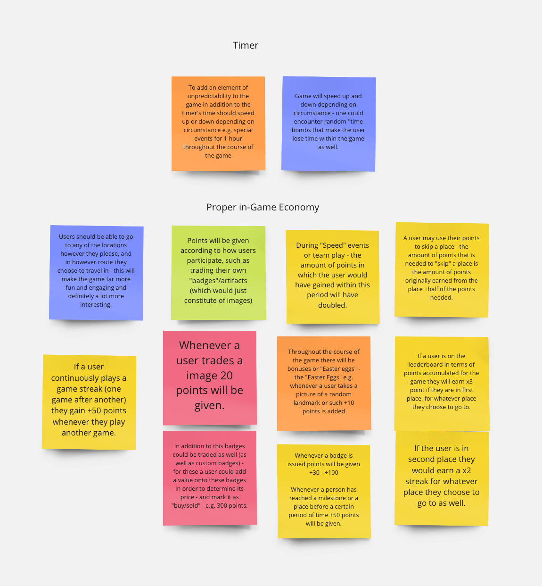
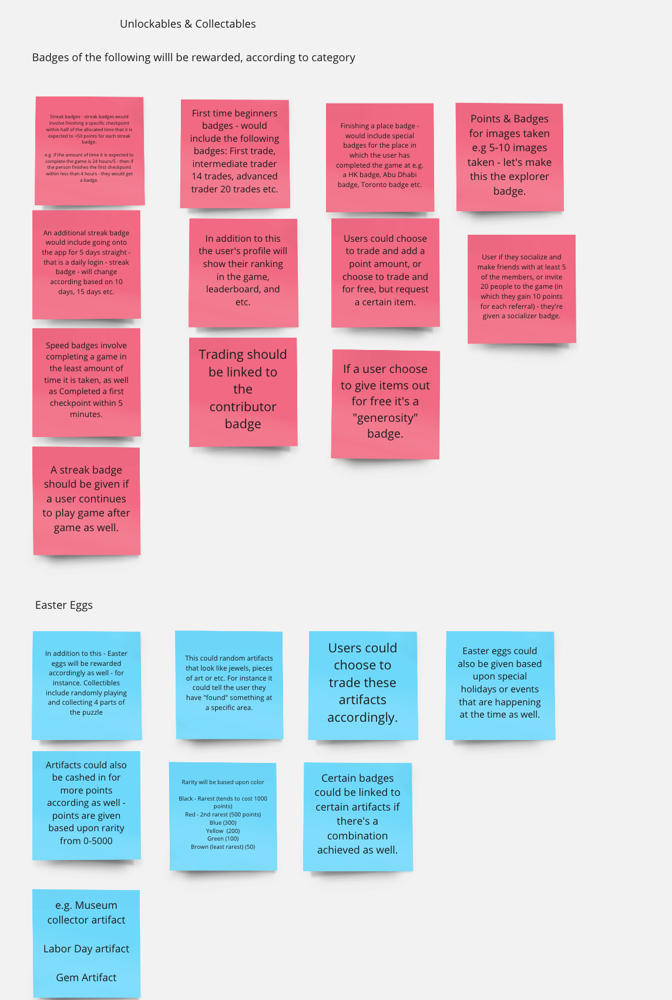
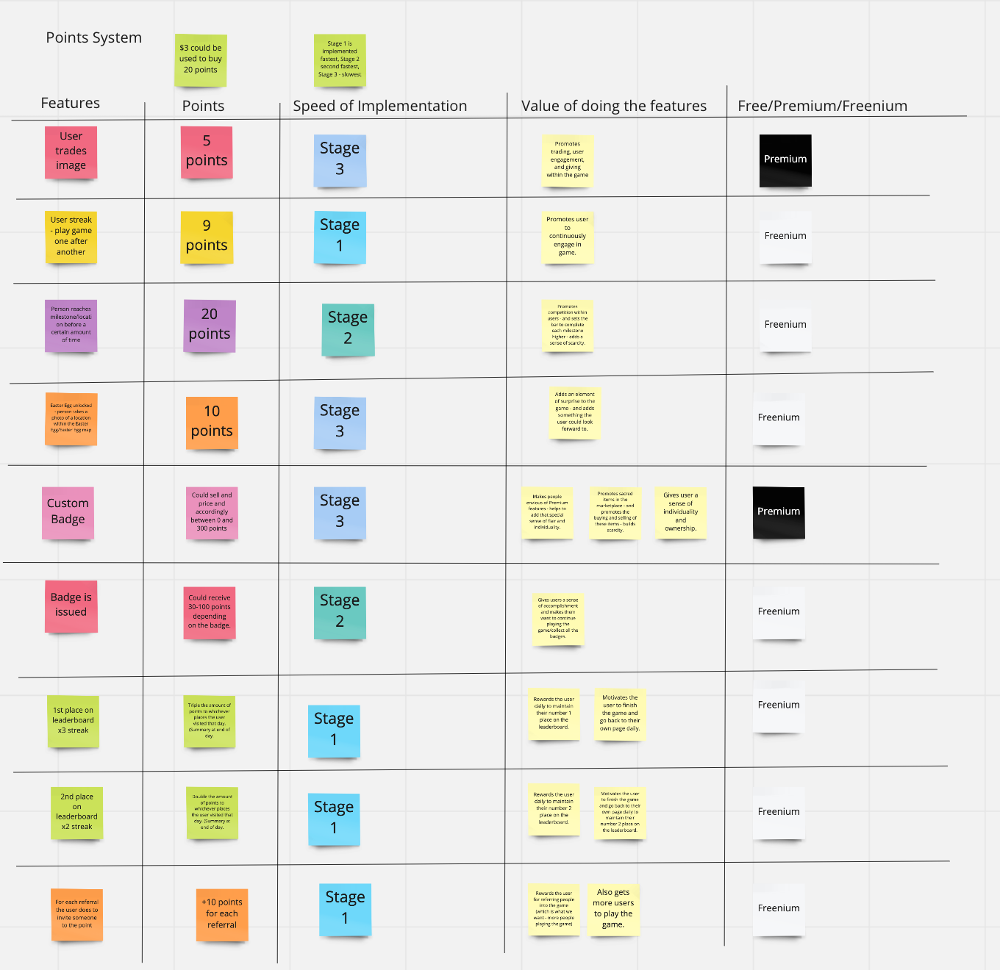
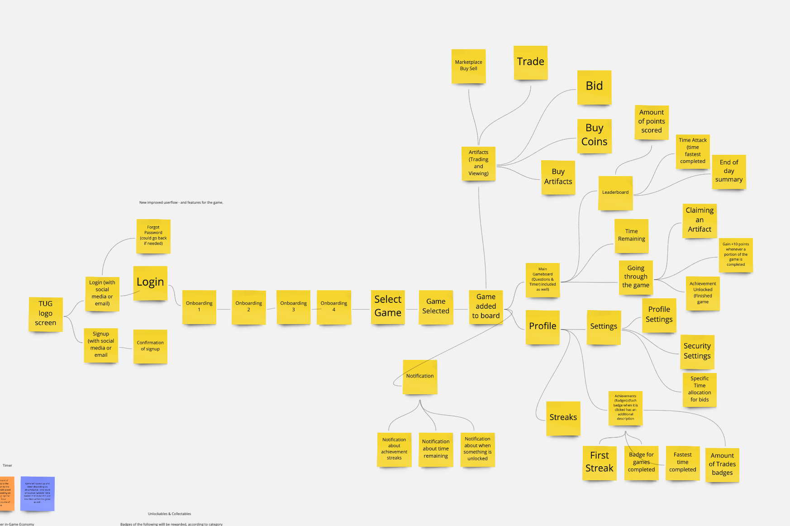
After designing the new user flow and deciding on freemium vs. premium features, we focused the medium-fidelity prototype on six core experiences: Map Selection, Gameboard, Answer Questions, Badges, Artifacts, Profile, and Secret Maps.

Select from a variety of game maps based on country to enrich your knowledge about a particular area.
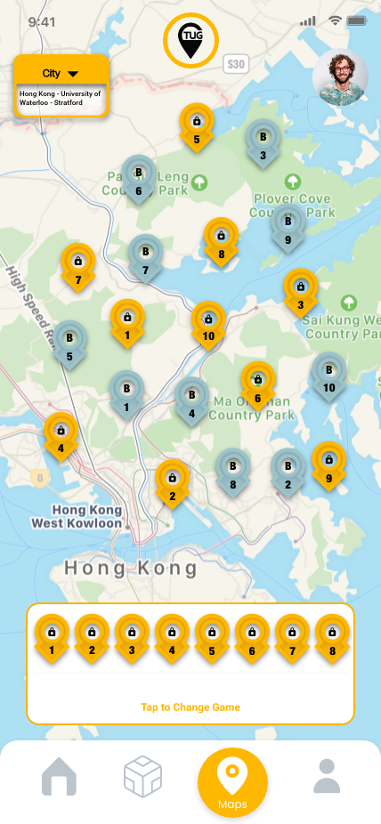
Complete all the location pin-points on a map to finish a gameboard and unlock new rewards.
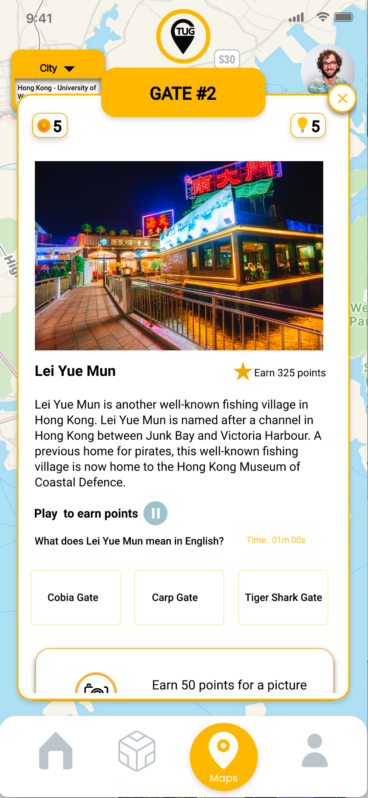
Go to each location, answer cultural questions, earn badges, and build your knowledge of the world as you explore.

Earn badges for completing locations and achievements. View your full collection in your personal dashboard.

Collect cultural artifacts throughout the game, trade with other players, combine them to create secondary artifacts, and work towards completing every set.
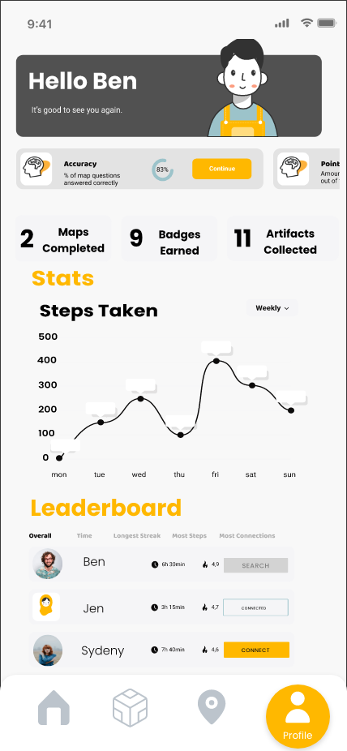
View all your achievements — badges collected, artifacts earned, steps counted, and your standing on the leaderboard.
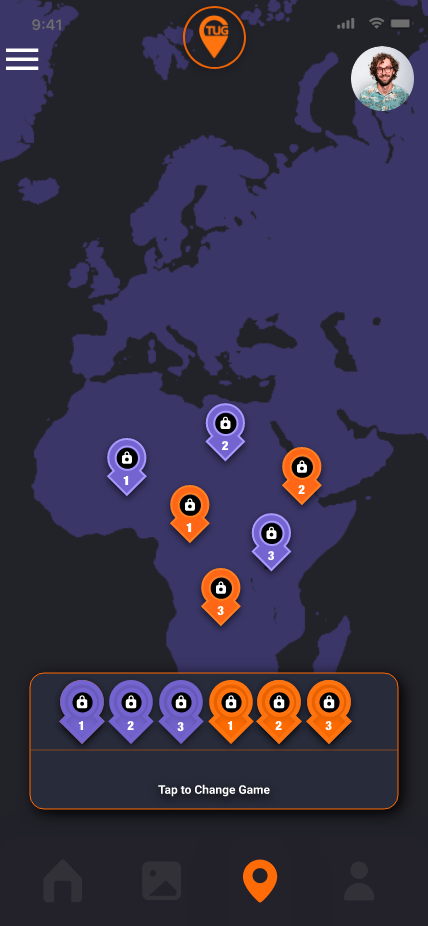
Unlock secret maps as you play and complete them to earn exclusive unlockables and in-game rewards.
The biggest time cost was client negotiation — managing expectations, redirecting focus from cryptocurrency to unlockables, and convincing the client to trust the design process. Once aligned, the pivot proved effective and led to a much stronger product direction.
Navigation architecture was a key lesson. More time on card-sorting and information architecture early would have saved significant rework later in the project.
Trading Artifacts
Players will be able to trade artifacts amongst other players, adding a social economy layer to the game.
New Gameboard Notifications
Alert players when a new gameboard becomes available in a new city.
Custom Artifacts
Premium users will be able to create and publish their own custom artifacts.
Step Count Analysis
A dedicated page for detailed step count analysis and activity history.
Multiplayer Mode
Premium users will be able to play alongside others from around the world in a healthy competitive environment.
User-Built Gameboards
A premium interface allowing users to design and publish their own gameboards in their own city.